Module 09 — Assistance avec GLPI¶
La transcription du support Drive et l’aide pédagogique sont séparées pour rendre leur provenance explicite.
SOURCE DRIVE · TRANSCRIPTION DU SUPPORT
Le contenu des documents du dossier TSSR est transcrit ci-dessous, page par page. Les textes et tableaux sont intégrés à la page Web. Aucun fichier PDF, aucune diapositive entière ni aucune reproduction de page n’est affiché. Seuls des croquis ou visuels isolés et vérifiés peuvent accompagner la transcription. Les versions et les consignes restent celles des supports de formation. Les compléments IA sont conservés dans leur onglet distinct.
Support · Module 09 - Support de cours · 11 pages transcrites
Texte, tableaux et illustrations utiles retranscrits du support ; numéros de diapositives, bandeaux répétitifs, éléments de marque et décorations exclus. Les formulations historiques sont conservées ; les précisions sont placées dans le cours optimisé.
Page 1
Sensibilisation ITIL
Module 09 – Assistance avec GLPI
Objectifs
- Découvrir la création d’un ticket
- Découvrir le traitement d’un ticket
- Appréhender la base de connaissance
Page 2
Le ticket
- Dans le monde de l’informatique, tout fonctionne à base de ticket
- Cela va permettre de solliciter la DSI
- Un ticket passera par plusieurs statuts : cycle de vie du ticket
- Peut-être de type incident ou demande
- Doit compter un minimum d’informations
- De nombreux avantages
Traçabilité Détection des
Répartition des
tâches Communication
problèmes
Utilisation d’un outil de gestion de ticket
L’assistance sous GLPI
- Système de gestion de tickets / outil de ticketing
- Conforme aux bonnes pratiques ITIL
- Recueil des sollicitations utilisateur pour une gestion centralisée
- Différents canaux de communication possibles
- Saisie, suivi et traitement du ticket
- Cycle de vie des tickets
- Statistiques possibles
Page 3
Flux d’entrée
Trois grandes façons de créer un ticket
- Interface d’ouverture de tickets anonymes
- Interface simplifiée
- Interface standard Depuis GLPI
- Envoi d’un mail dans une boîte mail support
- Configuration d’un collecteur Mail
- Création du ticket par téléphone
- Utilisation de l’interface standard par le technicien Téléphone
Cycle de vie d’un ticket
- Ni groupes et utilisateurs sur le ticket Nouveau
- En attente d’éléments => Modification manuelle En attente
- Au moins un utilisateur/groupe est attribué En cours attribué
- Une tâche vient d’être planifiée En cours planifié
- Une solution vient d’être apportée au ticket Résolu
- La solution est approuvée par le demandeur Clos
Page 4
Traitement d’un ticket : aperçu

Traitement d’un ticket : attribution
- Utilisateurs, groupes ou fournisseurs
- Représente les techniciens ou groupes de compétence en charge du ticket
- Utilisé lors des escalades fonctionnelles
- Raccourci pour s’attribuer nominativement le ticket
- Peut être automatisé en fonction de critères à la création du ticket
- Ticket visible pour traitement par les groupes et utilisateurs attribués


Attribution
Page 5
Traitement d’un ticket : observateurs
- Utilisé lors des escalades hiérarchiques
- Utilisateurs et groupes
- Notifications sans traitement possible du ticket
- Va permettre de suivre l’évolution d’un ticket
- Peuvent être ajoutés automatiquement à la création en fonction de critères


Ajout
Traitement d’un ticket : SLA
- Doivent être facilement identifiables
- Le type : temps de résolution
- La durée maximum de résolution souhaitée
- Possibilité de créer des niveaux d’escalade

Dépasser la date butoir de résolution n’est pas bloquant, juste informatif
Page 6
Traitement d’un ticket : validation
- Un ticket peut nécessiter une validation hiérarchique
- Manuelle ou automatique à la création
- Non bloquant pour le traitement du ticket
- Droits spécifiques pour pouvoir être « valideur »
- Demandes multiples possibles


- Les valideurs reçoivent une notification de validation
- Ils approuvent ou refusent en accédant au ticket à valider. Comment ?

Liste de ses tickets à valider

Depuis notre vue personnelle
Page 7
Traitement d’un ticket : validation


Traitement d’un ticket : traitement
- Onglet Traitement du ticket
- Quatre possibilités
- Suivi
- Tâche
- Solution
- Document

Page 8
Traitement d’un ticket : clôture
- La clôture du ticket s’effectue à l’approbation de la solution
- Peut être effectuée par le demandeur ou le rédacteur (ticket par téléphone)
- Accessible par le mail de validation ou le menu ticket de l’interface simplifiée
- Commentaire obligatoire en cas de refus
- Possibilité de planifier ou rendre la clôture immédiate à la résolution

Ticket : éléments liés
- Liaison de CI possible à la création d’un ticket
- Utile pour le diagnostic
- Utile pour les statistiques
- Nécessite une CMDB à jour et bien renseignée

Page 9
Base de connaissances : article
- Objectifs
- Centraliser des connaissances internes aux différents techniciens
- Mettre à disposition des utilisateurs des informations (FAQ)
- Accessible depuis Outils => Base de connaissances
- Restriction à un nombre d’acteurs
- Validation de publications d’articles
- Gestion des révisions
- Liaisons possibles avec les tickets et les éléments d’inventaire (CI)
- FAQ : sous-partie de la base de connaissances à destination des utilisateurs
- Organisation possible par catégories et restrictions temporelles
Base de connaissances : création

- Création d’un article
- Ajout des cibles
- Usage public ou non

- Article sans cible = Article non publié
- Apparaît dans Gérer
- Visible que par son créateur
Page 10
Base de connaissances : cibles
- Vont permettre de publier l’article à différentes personnes
- Entité – Profil – Groupe - Utilisateur


Base de connaissances publiques
- Éviter la création systématique d’un ticket
- FAQ (Foire Aux Questions)
- Accessible depuis l’interface simplifiée
- Accès rapide ou par catégories

Page 11
Création et gestion
des tickets
Démo
TP L'exploitation des
services
Référence du document : 1nf0OyiQI-Q464T8fgaIOZz2t4TV0Jzom · SHA-256 2e927cb500d1515b…
Énoncé · M09 - S01 TP-L'exploitation des services · 1 pages transcrites
Texte, tableaux et illustrations utiles retranscrits du support ; numéros de diapositives, bandeaux répétitifs, éléments de marque et décorations exclus. Les formulations historiques sont conservées ; les précisions sont placées dans le cours optimisé.
Page 1
Sensibilisation à ITIL
ITIL - L'exploitation des services TP du Module 09 – Assistance avec GLPI
Avant de démarrer ce TP, il convient d’avoir suivi les vidéos des modules 1 à 9 et d’avoir réalisé les TP proposés.
Durée estimée
3 heures
Énoncé
On vous demande d'étudier un nouveau service :
o Accueil d'un nouveau salarié commercial
1. Stratégie des Services
o Vous avez défini les grandes lignes de ce nouveau service
2. Conception des Services
o Vous avez détaillé les différentes étapes du service
3. Transition des Services
o Vous avez défini les temps d'intervention et le rôle de chaque technicien pour
chaque étape
4. Exploitation des Services
o Maintenant, vous allez lier les informations théoriques et l'utilisation de GLPI
Référence du document : 1Uu8gtmvuVlvvhQvCmNfoVJ66Rsa6wPbQ · SHA-256 74146f1c688e5029…
Correction · M09 - S01 TP-Corrigé_L'exploitation des services · 17 pages transcrites
Texte, tableaux et illustrations utiles retranscrits du support ; numéros de diapositives, bandeaux répétitifs, éléments de marque et décorations exclus. Les formulations historiques sont conservées ; les précisions sont placées dans le cours optimisé. Les valeurs de mot de passe du laboratoire sont masquées.
Correction originale : à consulter après avoir tenté l’exercice.
Page 1
Sensibilisation à ITIL
ITIL - L'exploitation des services TP du Module 09 – Assistance avec GLPI
Avant de démarrer ce TP, il convient d’avoir suivi les vidéos des modules 1 à 9 et d’avoir réalisé les TP proposés.
Durée estimée
3 heures
Solution
Etape 1 - Création du ticket par le responsable du service
Vous ouvrez une session sur GLPI en tant que directeur commercial :
- Login : balon.grejoy
- Mot de passe : [valeur de laboratoire masquée]
Création du ticket
- Cliquer sur créer un ticket
- Type : demande
- Catégorie : Nouveau Poste Complet
- Lieu : Service Commercial
- Titre : rempli automatiquement (ne pas changer)
- Description : Compléter les informations concernant les salariés
Les informations du salarié
- Nom : Targaryan
- Prénom : Deanerys
- Fonction : Commercial Itinérant
- Service : Commercial
Vous fermez la session
Pour vérifier, vous pouvez vous connecter avec l’utilisateur « balon.grejoy » pour suivre l’évolution du ticket.
- Une fois que la session est ouverte
- Cliquer sur « Tickets »
- Sélectionner le ticket
Page 2
Sensibilisation à ITIL
- Dans le menu de gauche, sélectionner « Traitement du ticket »
- Vous avez un aperçu de l’évolution du traitement du ticket
Vous fermez la session
Page 3
Sensibilisation à ITIL
Etape 2 - Traitement du ticket par le support N1
Vous ouvrez une session sur GLPI en tant que technicien de support de niveau 1
- Login : hoster.tully
- Mot de passe : [valeur de laboratoire masquée]
Vous ouvrez le ticket et vous l’escaladez vers le groupe des techniciens parc :
- Cliquer sur « Assistance », puis « tickets »
- Dans la liste des tickets, cliquer sur le titre du ticket.
o « Nouveau poste pour un nouveau salarié »
Dans le menu de gauche, sélectionner « Ticket »
- Dans le corps du ticket,
- Dans la zone « Acteur »
- Dans la colonne « Attribué à »
- Supprimer le groupe « GLPI-GRP-Support » en cliquant sur
- Cliquer sur « + » à côté de « Attribué à »
- Sélectionner « Groupe »
- Sélectionner « GLPI-GRP-PARC », escalade fonctionnelle
- Sauvegarder le ticket
- Cliquer sur « + » à côté de « Attribué à »
- Sélectionner « utilisateur »
- Sélectionner « Tyrion Lannister »
- Sauvegarder le ticket
Dans le menu de gauche, sélectionner « Traitement du ticket »
- Cliquer sur « Suivi »
- Dans « nouvel élément – suivi »
o Saisir « Escalade vers le groupe techniciens parc et envoi à l’administrateur
AD pour la création des différents comptes »
o Cliquer sur « Ajouter »
Fermer la session du technicien de support.
- Pour fermer la session, il faut cliquer sur
Page 4
Sensibilisation à ITIL
Etape 3 - Vérification et sortie du matériel du stock.
Vous ouvrez une session sur GLPI en tant que technicien de support Parc.
- Login : jorah.mormont
- Mot de passe : [valeur de laboratoire masquée]
Vous allez maintenant cliquer sur « Parc »
- Vous effectuez une recherche pour retrouver les éléments suivants :
| Matériel | Nom | N° Inventaire | Nouveau nom | ||
| Ordinateurs | Dell XPS 15 | LAPTOP-0013 | ITI-XPS15-006 | ||
| Périphériques | WD19DCS | Dock-00006 | ITI-WD19DCS-006 | ||
| (dock) | |||||
| Moniteurs | Dell 24 SE2416H | Dell 24 SE2416H-00027 | ITI-Dell24-006 | ||
| Téléphones | Tel Cisco 7811 | TEL-0030 | ITI-Cisco7811-006 | ||
| Téléphones | IPhoneX | MOB-0006 | ITI-IphoneX-006 |
- Pour chaque élément trouvé :
- Vous le renommez avec le nouveau nom présent dans le tableau.
- Exemple pour renommer l’ordinateur à suivre.
Pour effectuer la rechercher de l’ordinateur :
- Vous cliquez sur « Parc » puis « Ordinateurs »
- Dans la zone de recherche, vous indiquez les éléments suivants :

- Vous récupérez tous les ordinateurs en stock
o Vous cliquez sur le nom de l’ordinateur « Dell XPS 15 » portant le numéro
d’inventaire « Laptop-0013 »
- La fiche de l’ordinateur s’ouvre.
- Vous renommez l’ordinateur avec son nouveau nom.
- Vous sauvegardez.
Vous procédez de la même façon avec les différents éléments.
Page 5
Sensibilisation à ITIL
Maintenant que tous les éléments ont été renommés, vous allez les lier pour pouvoir effectuer les déplacements de façon global.
Vous allez ouvrir la fiche de l’ordinateur :
- Vous cliquez sur « Parc » puis « Ordinateurs »
- Dans la zone de recherche, vous indiquez les éléments suivants :

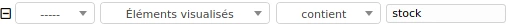
- Vous récupérez tous les ordinateurs en stock
- Vous cliquez sur le nom de l’ordinateur « ITI-XPS15-006 » portant le numéro d’inventaire « Laptop-0013 »
- La fiche de l’ordinateur s’ouvre.
- Dans le menu de gauche, vous cliquez sur « Connexions ».
- Sous « Connecter un élément »
- Sélectionnez « Moniteur », puis dans le menu qui vient d’apparaître vous
cliquez sur la flèche à l’extrémité droite pour faire apparaître la liste des moniteurs disponible.

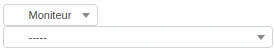
o Vous sélectionnez le moniteur se nommant « ITI-Dell24-006 » puis vous cliquez
sur « connecter ».
o Vous avez la possibilité d’effectuer des recherches dans le menu déroulant
pour filtrer les éléments qui apparaissent dans la liste :

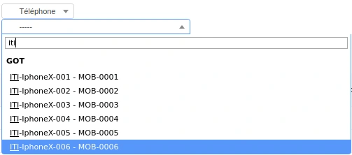
Page 6
Sensibilisation à ITIL
- Procéder de la même façon pour les autres matériels.
- Vous devez obtenir :

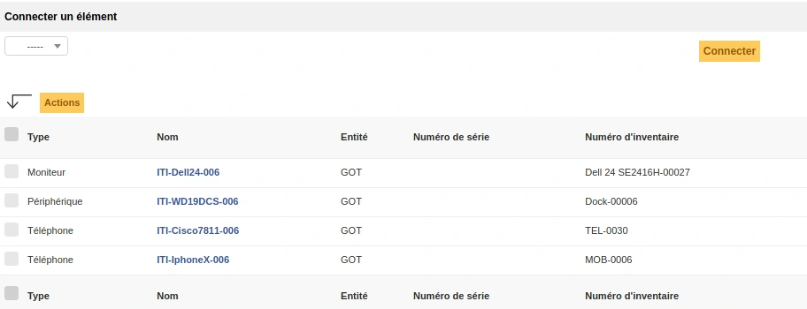
Vous déplacez l’ensemble du matériel pour qu’ils soient préparés.
- Dans le menu de gauche, sélectionnez l’onglet « Ordinateur »
- Vous changez la rubrique statut de « En stock » par « A préparer »
- Vous changez le lieu :
- De « …>Service Informatique>Stock »
- Par « …>Service Informatique>Stock>Matériels à préparer>A préparer1 »
- Sauvegarder
Vous vérifiez que tous les matériels sont dans le même lieu que l’ordinateur et vous allez changer leur statut
- A partir de la fiche de l’ordinateur, dans le menu de gauche, vous cliquez sur « Connexions », vous cliquez le nom du moniteur « ITI-Dell24-006 ».
- La fiche de moniteur s’ouvre :
- Dans le menu de gauche, cliquez sur « Moniteur ».
- Le lieu doit contenir « …>Service Informatique>Stock>Matériels à préparer>A
préparer 1 ».
o Modifier le statut en « A préparer ».
- Sauvegarder
- Dans le menu de gauche, cliquez sur « Connexions »
o Cliquer sur le nom de l’ordinateur « ITI-XPS-006 » pour retourner sur la fiche de
l’ordinateur.
- Vous procédez de la même façon avec les autres matériels.
- Ils doivent être tous dans le même lieu
- Ils doivent tous avoir le statut « A préparer »
Page 7
Sensibilisation à ITIL
Vous allez modifier le ticket pour indiquer ce que vous avez fait. Vous ouvrez le ticket et vous allez sortir le matériel du stock.
- Cliquer sur « Assistance », puis « tickets »
- Dans la liste des tickets, cliquer sur le titre du ticket.
o « Nouveau poste pour un nouveau salarié »
Dans le menu de gauche, sélectionner « Ticket »
- Dans le corps du ticket,
- Dans la zone « Description »
- Vous remplissez les champs suivants :
- Matériel disponible : OK
- Dans la zone « Acteur »
- Vérifier qu’il y a le groupe « GLPI-GRP-PARC » et l’utilisateur « Tyrion Lannister »
de présent.
- Sauvegarder
Vous allez rajouter le matériel au ticket
- Dans le menu de gauche, sélectionner « Eléments »
- A partir de la « recherche complète », vous allez rajouter les éléments au ticket.
- Vous devez obtenir :

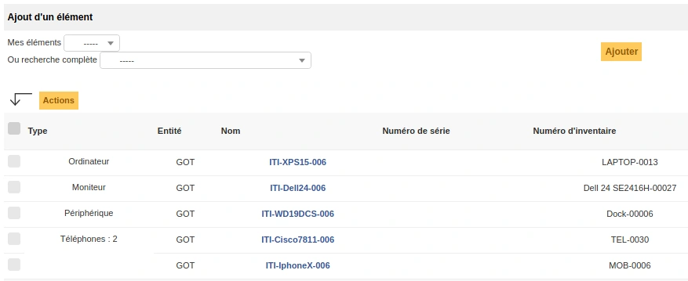
Dans le menu de gauche, sélectionner « Traitement du ticket »
- Cliquer sur « Suivi »
- Dans « nouvel élément – suivi »
- Saisir « Sortie du matériel du stock, prêt à être installé »
- Cliquer sur « Ajouter »
Fermer la session du technicien de parc.
Page 8
Sensibilisation à ITIL
Etape 4 - Création des comptes par l’administrateur Active Directory.
- Vous ouvrez une session sur GLPI en tant que technicien de support de niveau 1.
- Login : tyrion.lannister
- Mot de passe : [valeur de laboratoire masquée]
Vous ouvrez le ticket pour gérer l’installation du système d’exploitation et des logiciels.
- Cliquer sur « Assistance », puis « tickets »
- Dans la liste des tickets, cliquer sur le titre du ticket.
o « Nouveau poste pour un nouveau salarié »
Dans le menu de gauche, sélectionner « Ticket ».
- Dans le corps du ticket,
- Dans la zone « Description »
- Vous remplissez les champs suivants :
- Compte GLPI créé : OK
- Compte Active Directory créé : OK
- Compte Office 365 créé : OK
- Badge créé : OK
o Dans la zone « Acteur »
- Supprimer l’utilisateur « Tyrion Lannister » pour qu’il ne reste que le groupe « GLPI-GRP-PARC ».
- Sauvegarder
Vous modifiez le suivi du ticket.
- Dans le menu de gauche, sélectionner « Traitement du ticket »
- Cliquer sur « Suivi »
- Dans « nouvel élément – suivi »
- Saisir « Création des différents comptes effectués »
- Cliquer sur « Ajouter »
Fermer la session de l’administrateur Active Directory.
Page 9
Sensibilisation à ITIL
Etape 5 - Préparation du matériel
Vous considérez que le matériel a été testé et que le système d’exploitation ainsi que les logiciels ont été installés.
Vous allez gérer que les informations côté ticket et apporter des modifications à l’ordinateur.
Vous ouvrez une session sur GLPI en tant que technicien de support Parc.
- Login : barristan.selmy
- Mot de passe : [valeur de laboratoire masquée]
Vous ouvrez le ticket pour gérer l’installation du système d’exploitation et des logiciels.
- Cliquer sur « Assistance », puis « tickets »
- Dans la liste des tickets, cliquer sur le titre du ticket.
o « Nouveau poste pour un nouveau salarié »
Dans le menu de gauche, sélectionner « Eléments »
- Vous accédez à la liste des objets liés au ticket
- Cliquer sur le nom de l’ordinateur « ITI-XPS15-006 » pour accéder à la fiche.
Dans le menu de gauche, sélectionner « Systèmes d’exploitation »
- Vous remplissez les différents champs et vous sauvegardez pour obtenir :

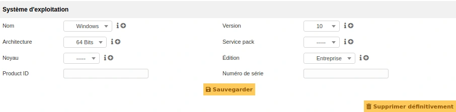
- Vous venez de renseigner le système d’exploitation qui a été installé.
Dans le menu de gauche, sélectionner « Logiciels »
- Vous allez ajouter les logiciels installés sur l’ordinateur.
- Pour installer « 7Zip » :
- En haut de la fenêtre, dans "Logiciels", sélectionner « 7Zip 64bits »
- Dans le menu qui est apparu, sélectionner « 7Zip 21.06 – En stock »
- Cliquer sur « Installer », vous venez de lier un logiciel à l’ordinateur.
- Vous installez ensuite la licence.
- En bas de la fenêtre, dans "Licences", sélectionner « 7Zip64 bits »
- Dans le menu qui est apparu, sélectionner « 7Zip 21.06 »
Page 10
Sensibilisation à ITIL
o Cliquer sur « Ajouter »
Vous procédez de la même façon pour installer les autres logiciels.
- Liste des logiciels à installer
| Logiciels | Licences | |||
| 7Zip 64bits | 7Zip 21.06 – En utilisation | 7Zip 64bits | 7Zip 21.06 | |
| Acrobat DC 2021.007 – | ||||
| Acrobat Reader DC | Acrobat Reader DC | Acrobat DC 2021.007 | ||
| En utilisation | ||||
| Chrome 96.0.4664.110 – | ||||
| Chrome 64bits | Chrome 64bits | Chrome 96.0.4664.110 | ||
| En utilisation | ||||
| Java 8 Update 311 – | ||||
| Java 64bits | Java 64bits | Java 8 Update 311 | ||
| En utilisation | ||||
| OpenVPN 2.5.5- | ||||
| OpenVPN | OpenVPN | OpenVPN 2.5.5 | ||
| En utilisation | ||||
| 2016 Standard – | ||||
| Pack Office | Pack Office | 2016 Standard | ||
| En utilisation |
Dans le menu de gauche, sélectionner « Ordinateur »
- Vous modifiez le statut de l’ordinateur
o Vous remplacez « En stock > A préparer » par « En stock > A livrer »
- Vous modifiez le lieu
o Vous remplacez « >Matériels à préparer > A préparer 1 » par « >Matériels à
livrer > A livrer 1 »
- Vous sauvegardez
Vous faites les mêmes changements sur les autres éléments.
- Pour retrouver les éléments plus rapidement, passer par le ticket.
- Comme les éléments sont liés, le changement a dû être pris en compte
o Vérifier le lieu
- Modifier le statut
- Sauvegarder les modifications avant de changer de matériel.
Page 11
Sensibilisation à ITIL
Vous modifiez le suivi du ticket.
- Cliquer sur « Assistance », puis « tickets »
- Dans la liste des tickets, cliquer sur le titre du ticket.
o « Nouveau poste pour un nouveau salarié »
Dans le menu de gauche, sélectionner « Ticket »
- Dans le corps du ticket,
- Dans la zone « Description »
o Vous remplissez les champs suivants :
- Prises électriques installées et créées : OK
- Prises réseaux installées et testées : OK
- Mobilier installé : OK
- Matériel installé : OK
o Dans la zone « Acteur »
- Vérifier qu’il y a le groupe « GLPI-GRP-PARC ».
- Sauvegarder
Dans le menu de gauche, sélectionner « Traitement du ticket »
- Cliquer sur « Suivi »
- Dans « nouvel élément – suivi »
o Saisir « Matériel vérifié et configuré, prêt à être livré »
- Cliquer sur « Ajouter »
Etape 6 - Livraison et installation du matériel
Vous ouvrez une session sur GLPI en tant que technicien de support Parc.
- Login : jorah.mormont
- Mot de passe : [valeur de laboratoire masquée]
Vous ouvrez le ticket pour gérer la livraison du matériel.
- Le matériel a été livré, installé et configuré, le technicien parc effectue les modifications nécessaires dans GLPI.
- Cliquer sur « Assistance », puis « tickets »
- Dans la liste des tickets, cliquer sur le titre du ticket.
o « Nouveau poste pour un nouveau salarié »
Dans le menu de gauche, sélectionner « Eléments »
- Vous accédez à la liste des objets liés au ticket
- Cliquer sur le nom de l’ordinateur « ITI-XPS15-006 » pour accéder à la fiche.
Page 12
Sensibilisation à ITIL
Dans le menu de gauche, sélectionner « Ordinateur »
- Modifier le statut de l’ordinateur
o Remplacer « En stock > A livrer » par « En utilisation »
- Modifier le lieu
o Remplacer « >Matériels à livrer > A livrer 1 » par « Service Commercial »
- Modifier l’utilisateur
o Sélectionner l’utilisatrice « Deanerys Targaryan »
- Sauvegarder
- Tout le matériel est déplacé dans le nouveau lieu et l’utilisatrice est mise à jour sur toutes les fiches des matériels.
Dans le menu de gauche, sélectionner « Connexions ».
- Cliquer sur « ITI-Cisco-7811-006 », vous ouvrez la fiche du téléphone IP.
- Modifier le statut
- Remplacer « En stock > A livrer » par « En utilisation »
- Sauvegarder
Dans le menu de gauche, sélectionner « Ports réseau ».
- Cliquez sur le « 1 » en début de ligne.
- Dans la liste déroulante « Prise réseau », vous sélectionnez « S231-161 »
- Dans la liste déroulante « Connecté à », vous sélectionnez :
- « Matériel réseau »
- « Switch-Rezo-C2960L-Utilisateurs »
- « Switch-Rezo-C2960L-Utilisateurs - Le port eth26 »

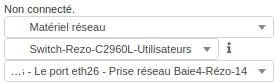
o Vous sauvegardez
En faisant cette manipulation, vous venez d’indiquer sur quelle prise murale est branché le téléphone IP et vous avez indiqué sur quel port de quel switch est connectée la prise murale.
Pour revenir sur la fiche du téléphone.
- Cliquer sur le nom du téléphone en haut de la fiche.
Page 13
Sensibilisation à ITIL

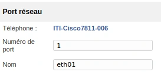
Pour revenir sur la fiche de l’ordinateur.
- Dans le menu de gauche, sélectionner « Connexions ».
- Cliquer sur le nom de l’ordinateur « ITI-XPS15-006 ».
Sur la fiche de l’ordinateur.
- Dans le menu de gauche, sélectionner « Connexions » pour faire apparaître la liste du matériel.
- Cliquer sur le nom du moniteur « ITI-Dell24-006 » pour accéder à la fiche du moniteur.
Sur la fiche du moniteur
- Modifier le statut
- Remplacer « En stock > A livrer » par « En utilisation »
- Sauvegarder
Pour revenir sur la fiche de l’ordinateur.
- Dans le menu de gauche, sélectionner « Connexions ».
- Cliquer sur le nom de l’ordinateur « ITI-XPS15-006 ».
Sur la fiche de l’ordinateur.
- Dans le menu de gauche, sélectionner « Connexions » pour faire apparaître la liste du matériel.
- Cliquer sur le nom du périphérique « ITI-WDS19DCS-006 » pour accéder à la fiche du dock.
Sur la fiche du dock.
- Dans le menu de gauche, sélectionner « Périphérique ».
- Modifier le statut
- Remplacer « En stock > A livrer » par « En utilisation »
- Sauvegarder
Dans le menu de gauche, sélectionner « Ports réseau ».
- Cliquez sur le « 1 » en début de ligne.
o Dans la liste déroulante « Connecté à », vous sélectionnez :
- « Téléphone »
Page 14
Sensibilisation à ITIL
- « ITI-Cisco7811-006 »
- « ITI-Cisco7811-006 – Le port eth02 – Prise réseau S331-031 »»

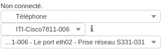
o Sauvegarder
Pour revenir sur la fiche du dock.
- Cliquer sur le nom du dock en haut de la fiche.

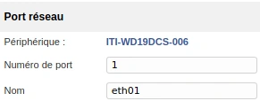
En faisant cette manipulation, vous venez d’indiquer que le câble Ethernet du dock est connecté au micro switch du téléphone pour accéder au réseau de l’entreprise.
Pour revenir sur la fiche de l’ordinateur.
- Dans le menu de gauche, sélectionner « Connexions ».
- Cliquer sur le nom de l’ordinateur « ITI-XPS15-006 ».
Sur la fiche de l’ordinateur.
- Dans le menu de gauche, sélectionner « Connexions » pour faire apparaître la liste du matériel.
- Cliquer sur le nom du téléphone « ITI-IphoneX-006 » pour accéder à la fiche du téléphone.
Sur la fiche du téléphone.
- Dans le menu de gauche, sélectionner « Téléphone ».
- Modifier le statut
- Remplacer « En stock > A livrer » par « En utilisation »
- Sauvegarder
Pour revenir sur la fiche de l’ordinateur.
- Dans le menu de gauche, sélectionner « Connexions ».
- Cliquer sur le nom de l’ordinateur « ITI-XPS15-006 ».
Page 15
Sensibilisation à ITIL
Sur la fiche de l’ordinateur.
- Dans le menu de gauche, vous cliquez sur « Connexions ».
- Sous « Connecter un élément »
- Sélectionner « Imprimantes »
- Sélectionner l’imprimante nommée « Com-Lex-MS310DN-001 – IMP-0005 »
- Cliquer sur « Connecter »
En faisant cette manipulation, vous venez d’indiquer quelle imprimante peut utiliser l’utilisateur de l’ordinateur.
Vous obtenez ceci.

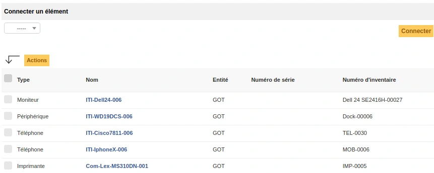
Page 16
Sensibilisation à ITIL
Vous modifiez le suivi du ticket.
- Cliquer sur « Assistance », puis « tickets »
- Dans la liste des tickets, cliquer sur le titre du ticket.
o « Nouveau poste pour un nouveau salarié »
Dans le menu de gauche, sélectionner « Ticket »
- Dans le corps du ticket,
- Dans la zone « Description »
o Vous remplissez les champs suivants :
- Matériel livré : OK
o Sauvegarder
Dans le menu de gauche, sélectionner « Traitement du ticket »
- Cliquer sur « Suivi »
- Dans « nouvel élément – suivi »
- Saisir « Matériel livré et installé »
- Cliquer sur « Ajouter »
Dans le menu « Ajouter : », cliquer sur « Solution ».
- Gabarit de solution : Livraison de matériels
- Type de solution : Livraison
- Enregistrer et ajouter à la base de connaissances : NON
- Description : prérempli
- Ajouter
- Le statut du ticket passe à « Résolu »
Fermer la session.
Page 17
Sensibilisation à ITIL
Etape 7 - Clôture du ticket par le responsable du service.
Vous ouvrez une session sur GLPI en tant que directeur commercial :
- Login : balon.grejoy
- Mot de passe : [valeur de laboratoire masquée]
Clôturer le ticket
- Cliquer sur « Tickets »
- Sélectionner le ticket
- Dans le menu de gauche, sélectionner « Traitement du ticket »
- Vous avez un aperçu de l’évolution du traitement du ticket.
- Cliquer sur « Approuver la solution » pour clôturer le ticket.
- Dans le menu de gauche, sélectionner « Ticket »
o Le statut de ticket est passé à « Clos ».

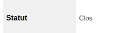
Fermer la session.
Référence du document : 1i035JKa6bXoX9kaLIH95ejMugk3WjpLI · SHA-256 25f6abc33502e1e8…
Complément IA / externe au cours — fiche pédagogique du portail
Cette fiche contient une reformulation et des aides d’apprentissage rédigées par IA. Elle est distincte de la transcription des documents du Drive et ne la remplace pas. Les schémas de synthèse de cette fiche sont des illustrations IA / externes au cours, sauf les captures explicitement attribuées à un document source.
Objectifs¶
- Expliquer les entrées du ticket et distinguer attribution, traitement, validation et clôture.
- Tester l’accès à une fiche ou à un article avec les rôles concernés.
- Réaliser les sept étapes du TP d’exploitation, de la demande au contrôle de clôture.
Le ticket assure la continuité du traitement¶
GLPI centralise incidents et demandes, assure le suivi des échanges et relie les interventions au parc et à la connaissance. Un ticket apporte traçabilité, communication, répartition du travail et détection des récurrences. Il doit contenir assez d’informations pour qu’un autre technicien puisse reprendre le dossier.
| Information à recueillir | Utilité |
|---|---|
| Demandeur, coordonnées et entité | Identifier la personne et le périmètre autorisé. |
| Type, catégorie, titre et description | Distinguer demande et incident, puis comprendre le besoin. |
| Symptômes, date, étendue et conséquences | Qualifier l’impact et l’urgence. |
| Équipement ou CI concerné | Relier le dossier au parc et aux dépendances. |
| Actions, résultats et pièces utiles | Éviter de recommencer les mêmes essais. |
| Affectation, échéances et suivi | Rendre la prise en charge vérifiable. |
Les entrées du support sont le portail GLPI (interface anonyme si configurée, simplifiée ou standard), un collecteur de courriels et le téléphone avec saisie par le technicien. Ces canaux doivent aboutir à un enregistrement cohérent ; un appel seul ne conserve pas tout l’historique.
Lire les états sans confondre affectation et résolution¶
Illustration IA / externe au cours — schéma pédagogique de synthèse.
Ce schéma est une aide externe ; la matrice des transitions dépend du profil et de la configuration. « Résolu » signifie qu’une solution a été proposée ; « Clos » signifie que le traitement est finalisé selon le circuit prévu. Les règles peuvent prévoir une fermeture automatique après un délai. Vérifier les autorisations réelles avant d’affirmer qu’un acteur peut changer un statut.
Attribution, observateurs, validations et engagements¶
L’attribution désigne l’utilisateur, le groupe ou le fournisseur chargé du traitement. Les observateurs suivent les informations sans prendre nécessairement en charge l’intervention. Une escalade technique doit transmettre un diagnostic exploitable. La validation répond à une autorisation prévue ; elle se distingue de l’approbation finale de la solution.
Le SLA encadre les engagements convenus ; les échéances de prise en charge et de résolution doivent être comprises et suivies. Selon le paramétrage, une échéance dépassée déclenche des actions ou une escalade ; elle ne supprime pas le ticket. Impact, urgence et priorité sont distincts et la matrice de calcul est configurable.
| Trace dans le traitement | Contenu utile |
|---|---|
| Suivi | Échanges, informations et comptes rendus de progression. |
| Tâche | Action réalisée ou planifiée, intervenant et résultat. |
| Document | Pièce nécessaire, lisible et correctement protégée. |
| Solution | Diagnostic retenu, correction ou contournement, tests et limites. |
La clôture suit l’approbation ou les règles de traitement prévues. Si la solution est refusée, recueillir le motif et poursuivre l’analyse. Relier le CI concerné aide les statistiques et le diagnostic ; la qualité de cette relation dépend d’une CMDB entretenue.
Capitaliser dans la base de connaissances¶
Le support décrit création d’article, cibles, visibilité publique ou non, révisions, restrictions temporelles, liens avec tickets et CI, catégories et FAQ. Un article sans cible peut rester non publié dans le fonctionnement montré : vérifier le résultat avec le profil destinataire. Distinguer visibilité d’édition, visibilité de consultation et exposition éventuelle d’une FAQ ; protéger les données personnelles et les informations d’accès.
TP — exploitation des services¶
Le sujet et sa correction de 17 pages sont fournis. Le cas relie la demande d’arrivée d’un salarié, ses équipements, les relations et ports du parc, puis la clôture du ticket. Réaliser le sujet dans le laboratoire, conserver les identifiants et preuves attendus, puis comparer avec la correction originale. Les captures correspondent à la version du laboratoire ; retrouver la fonction équivalente si les menus diffèrent.
Suivre les sept étapes du ticket d’arrivée¶
| Étape du corrigé | Action | Contrôle dans le dossier |
|---|---|---|
| 1 | Le responsable du service crée le ticket. | Le demandeur et le besoin sont renseignés. |
| 2 | Le support de niveau 1 traite et oriente le ticket. | L’affectation et les premières actions figurent dans l’historique. |
| 3 | Le matériel est vérifié et sorti du stock. | Les éléments correspondent au besoin du salarié. |
| 4 | L’administrateur Active Directory crée les comptes. | Les accès requis sont préparés et tracés. |
| 5 | Le matériel est préparé et rapproché des fiches du parc. | Les composants, relations et ports attendus sont vérifiables. |
| 6 | Le matériel est livré et installé. | Conserver le résultat du test et les références des équipements. |
| 7 | Le responsable du service clôture le ticket dans le scénario. | La solution est approuvée selon le circuit décrit et la trace est conservée. |
Ouvrir l’énoncé et les contrôles du TP.
Notions détaillées pour approfondir¶
Les notions détaillées ci-dessous conservent le périmètre et les exemples du support historique, avec une mise en page réparée. Les réserves et corrections exposées plus haut s’appliquent à cette relecture. Pour la formulation source exacte, utiliser Cours Original. Les captures sont des illustrations isolées du support, pas des schémas générés.
Ticket, flux d’entrée et traitement¶
Sensibilisation ITIL
Module 09 – Assistance avec GLPI
Objectifs
- Découvrir la création d’un ticket
- Découvrir le traitement d’un ticket
- Appréhender la base de connaissance
Le ticket
- Dans le monde de l’informatique, tout fonctionne à base de ticket
- Cela va permettre de solliciter la DSI
- Un ticket passera par plusieurs statuts : cycle de vie du ticket
- Peut-être de type incident ou demande
- Doit compter un minimum d’informations
- De nombreux avantages
Traçabilité Détection des
Répartition des
tâches Communication
problèmes
Utilisation d’un outil de gestion de ticket
L’assistance sous GLPI
- Système de gestion de tickets / outil de ticketing
- Conforme aux bonnes pratiques ITIL
- Recueil des sollicitations utilisateur pour une gestion centralisée
- Différents canaux de communication possibles
- Saisie, suivi et traitement du ticket
- Cycle de vie des tickets
- Statistiques possibles
Flux d’entrée
Trois grandes façons de créer un ticket
- Interface d’ouverture de tickets anonymes
- Interface simplifiée
- Interface standard Depuis GLPI
- Envoi d’un mail dans une boîte mail support
- Configuration d’un collecteur Mail
- Création du ticket par téléphone
- Utilisation de l’interface standard par le technicien Téléphone
Cycle de vie d’un ticket
- Ni groupes et utilisateurs sur le ticket Nouveau
- En attente d’éléments => Modification manuelle En attente
- Au moins un utilisateur/groupe est attribué En cours attribué
- Une tâche vient d’être planifiée En cours planifié
- Une solution vient d’être apportée au ticket Résolu
- La solution est approuvée par le demandeur Clos
Traitement d’un ticket : aperçu
Traitement d’un ticket : attribution
- Utilisateurs, groupes ou fournisseurs
- Représente les techniciens ou groupes de compétence en charge du ticket
- Utilisé lors des escalades fonctionnelles
- Raccourci pour s’attribuer nominativement le ticket
- Peut être automatisé en fonction de critères à la création du ticket
- Ticket visible pour traitement par les groupes et utilisateurs attribués
Attribution
Observateurs, validations et clôture¶
Traitement d’un ticket : observateurs
- Utilisé lors des escalades hiérarchiques
- Utilisateurs et groupes
- Notifications sans traitement possible du ticket
- Va permettre de suivre l’évolution d’un ticket
- Peuvent être ajoutés automatiquement à la création en fonction de critères
Ajout
Traitement d’un ticket : SLA
- Doivent être facilement identifiables
- Le type : temps de résolution
- La durée maximum de résolution souhaitée
- Possibilité de créer des niveaux d’escalade
Dépasser la date butoir de résolution n’est pas bloquant, juste informatif
Traitement d’un ticket : validation
- Un ticket peut nécessiter une validation hiérarchique
- Manuelle ou automatique à la création
- Non bloquant pour le traitement du ticket
- Droits spécifiques pour pouvoir être « valideur »
- Demandes multiples possibles
Traitement d’un ticket : validation
- Les valideurs reçoivent une notification de validation
- Ils approuvent ou refusent en accédant au ticket à valider. Comment ?
Liste de ses tickets à valider
Depuis notre vue personnelle
Traitement d’un ticket : validation
Traitement d’un ticket : traitement
- Onglet Traitement du ticket
- Quatre possibilités
- Suivi
- Tâche
- Solution
- Document
Traitement d’un ticket : clôture
- La clôture du ticket s’effectue à l’approbation de la solution
- Peut être effectuée par le demandeur ou le rédacteur (ticket par téléphone)
- Accessible par le mail de validation ou le menu ticket de l’interface simplifiée
- Commentaire obligatoire en cas de refus
- Possibilité de planifier ou rendre la clôture immédiate à la résolution
Ticket : éléments liés
- Liaison de CI possible à la création d’un ticket
- Utile pour le diagnostic
- Utile pour les statistiques
- Nécessite une CMDB à jour et bien renseignée
Base de connaissances et atelier¶
Base de connaissances : article
- Objectifs
- Centraliser des connaissances internes aux différents techniciens
- Mettre à disposition des utilisateurs des informations (FAQ)
- Accessible depuis Outils => Base de connaissances
- Restriction à un nombre d’acteurs
- Validation de publications d’articles
- Gestion des révisions
- Liaisons possibles avec les tickets et les éléments d’inventaire (CI)
- FAQ : sous-partie de la base de connaissances à destination des utilisateurs
- Organisation possible par catégories et restrictions temporelles
Base de connaissances : création
- Création d’un article
- Ajout des cibles
- Usage public ou non
- Article sans cible = Article non publié
- Apparaît dans Gérer
- Visible que par son créateur
Base de connaissances : cibles
- Vont permettre de publier l’article à différentes personnes
- Entité – Profil – Groupe - Utilisateur
Base de connaissances publiques
- Éviter la création systématique d’un ticket
- FAQ (Foire Aux Questions)
- Accessible depuis l’interface simplifiée
- Accès rapide ou par catégories
Création et gestion
des tickets
Démo
TP L'exploitation des
services
Vérifier en pratique¶
| Point de contrôle | Résultat attendu |
|---|---|
| Ticket | Vérifier la demande, le responsable du traitement, les étapes et l’historique. |
| Parc et droits | Vérifier les fiches du matériel, l’utilisateur associé et l’accès dans la bonne entité. |
| Clôture | Conserver le résultat de la livraison et la validation du responsable dans le scénario. |
Mini-quiz — 5 questions¶
- Attribué signifie-t-il résolu ?
- Quelle différence entre observateur et technicien affecté ?
- Une solution proposée clôture-t-elle toujours immédiatement ?
- Pourquoi tester l’article avec un autre profil ?
- Le ticket est attribué et les équipements sont visibles. Que faut-il vérifier pour clôturer ce cas ?
Réponses commentées
-
Non : le travail a un responsable, le résultat reste à obtenir.
-
L’un suit l’information ; l’autre prend en charge le traitement.
-
Non : approbation ou règle de clôture s’applique selon la configuration.
-
Pour vérifier les droits et la visibilité réellement obtenus.
-
L’installation et le test du matériel livré, la trace du résultat et la validation prévue par le scénario.
Pratiquer et réviser¶
Références externes vérifiées le 4 novembre 2026¶
M09 — Assistance avec GLPI
20 questions
Teste tes connaissances sur ce module.